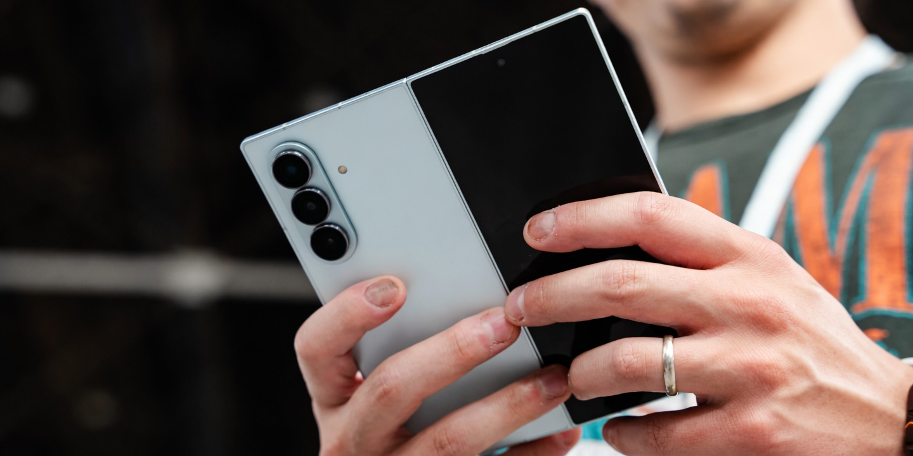

Galaxy Z Fold 8 Specs Leak: 200MP Camera, 5,000 mAh Battery & New 'Wide' Model Revealed


A new Galaxy Z Fold 8 specs leak — sourced from Greek tech publication TechManiacs and picked up by GSMArena — is claiming the most significant upgrade the Z Fold line has seen in three generations: a 5,000 mAh battery, a 200MP main camera, and an entirely new variant called the Galaxy Z Fold 8 Wide. If even half of this holds up at launch, Samsung is finally addressing the core complaints that have followed the Fold series for two years running.
The Z Fold 7 shipped with a 4,400 mAh battery that reviewers widely described as the device's biggest weakness. A jump to 5,000 mAh would close the gap with flagship Android slab phones and remove the one spec that genuinely limited the Fold 7 in head-to-head comparisons. The camera upgrade to 200MP is more polarizing — it's a number that looks great in spec sheets but depends entirely on Samsung's pixel-binning implementation to translate into real-world image quality gains.
Table of Contents
- Galaxy Z Fold 8: Full Leaked Specs vs Galaxy Z Fold 7
- The 5,000 mAh Battery Upgrade: Why It Actually Matters
- 200MP Camera on a Foldable: Impressive or Just a Number?
- Galaxy Z Fold 8 Wide: New Variant Explained
- How Reliable Is This Leak? TechManiacs Track Record
- Expected Price and Launch Date
- Frequently Asked Questions
Galaxy Z Fold 8: Full Leaked Specs vs Galaxy Z Fold 7
The leaked specs are specific enough to do a meaningful comparison. Here's what the TechManiacs report claims for the Galaxy Z Fold 8 against the confirmed Galaxy Z Fold 7 specs:
| Specification | Galaxy Z Fold 7 | Galaxy Z Fold 8 (Leaked) |
|---|---|---|
| Processor | Snapdragon 8 Elite Gen 4 | Snapdragon 8 Elite Gen 5 |
| Battery | 4,400 mAh | 5,000 mAh |
| Main Camera | 50MP | 200MP |
| Ultrawide Camera | 12MP | 50MP |
| Selfie Camera (cover) | 10MP | 10MP |
| Weight | 215g | 210g (claimed) |
| Unfolded Thickness | 4.2mm | 4.1mm (claimed) |
The processor generational jump to Snapdragon 8 Elite Gen 5 is expected and unremarkable — Samsung upgrades the chip every year. The camera and battery numbers are the story. A 200MP main sensor and a 50MP ultrawide represent a generational leap on paper. Whether it translates to a generational leap in photos is a different question, covered below.
The 5,000 mAh Battery Upgrade: Why It Actually Matters
The Galaxy Z Fold 7 had a battery problem. A 4,400 mAh cell was powering a device with two displays — the 6.3-inch cover screen and the 7.8-inch inner foldable panel — both running at high refresh rates. The result was that the Fold 7 routinely finished heavy-use days in the yellow, and power users found themselves reaching for a charger by early evening.
A 600 mAh increase to 5,000 mAh sounds modest in percentage terms — roughly 14 percent more capacity. But in a foldable, where power management across two displays is inherently less efficient than in a standard flagship, that jump is likely to deliver a real, noticeable improvement in screen-on time. Most flagships are hitting consistent all-day battery life at 5,000 mAh; the Fold 7 was struggling to reach that mark at 4,400.
The bigger question is whether Samsung can fit a 5,000 mAh battery without increasing thickness. The leak claims the Fold 8 will actually be 0.1mm thinner than the Fold 7, which would require a denser battery cell — consistent with the silicon-carbon anode technology Samsung is reportedly deploying across its 2026 lineup. That same technology is rumored for the Galaxy S27 series and would make the Fold 8 battery claim technically plausible.
Also Read
More Tech stories →200MP Camera on a Foldable: Impressive or Just a Number?
A 200MP main camera on a foldable phone is a genuinely significant claim. Samsung has deployed 200MP sensors on the Galaxy S24 Ultra and S25 Ultra — both of which have substantially more rear camera module space than the Z Fold series. Fitting a large 200MP sensor into the foldable's more constrained rear housing while maintaining the device's slim profile when unfolded is an engineering challenge.
The skeptical reading: 200MP sensors rely heavily on pixel binning — combining multiple smaller pixels into one larger effective pixel — to produce usable images. In good light, binned 200MP shots can be excellent. In low light or challenging conditions, the output quality depends more on the sensor's physical size and Samsung's image processing software than the headline megapixel count. A 200MP sensor in a thinner camera module may not outperform the Fold 7's 50MP system in practical shooting.
The optimistic reading: Samsung has spent two years refining its 200MP implementation on the S-series, and the Fold 8 would benefit from that work. The 50MP ultrawide upgrade — up from 12MP on the Fold 7 — is arguably the more impactful improvement, as it closes the quality gap between the main and ultrawide cameras that has been a consistent weak point on every Fold model.
Key Takeaways
- The Galaxy Z Fold 8 leak claims a 5,000 mAh battery — up 600 mAh from the Fold 7's widely criticized 4,400 mAh cell — plus a 200MP main camera and 50MP ultrawide, both major upgrades on paper.
- A new Galaxy Z Fold 8 Wide variant is allegedly launching alongside the standard model, featuring a wider 4:3 inner display aspect ratio and a simplified dual-camera setup — potentially targeting a different use case and price point.
- The source, TechManiacs, has a mixed track record — accurate on Watch Ultra and Z Flip 7 battery specs last year, but wrong on Z Fold 7 thickness. The battery and camera figures are credible; the dimension claims are contested by an earlier conflicting leak.
Galaxy Z Fold 8 Wide: New Variant Explained
The more unexpected part of the leak is the Galaxy Z Fold 8 Wide — an allegedly new foldable form factor with a 4:3 inner display aspect ratio. The standard Z Fold has always used a taller, narrower inner screen closer to a 1:1 ratio. A 4:3 inner panel would create a noticeably wider folded format, closer to what you'd see on a standard tablet in landscape orientation.
Here's the leaked comparison between the two models:
| Specification | Z Fold 8 (Standard) | Z Fold 8 Wide (Leaked) |
|---|---|---|
| Inner Display | 7.8-inch (estimated) | 4:3 aspect ratio (wider) |
| Main Camera | 200MP | 50MP |
| Ultrawide Camera | 50MP | 50MP |
| Telephoto | 10MP | Not reported |
| Battery | 5,000 mAh | 4,800 mAh |
| Weight | 210g | ~200g |
The Wide model's simplified dual-camera system — dropping the high-resolution main sensor in favor of a standard 50MP — suggests it may be positioned as a slightly more accessible foldable option rather than a premium alternative. A 4:3 inner display would also make the device more useful for tablet-style productivity and media consumption without the ultra-tall letterboxing that some Z Fold users find awkward.
If the Wide variant is real and launches alongside the standard Fold 8, it would be the first time Samsung has offered two meaningfully different Z Fold form factors simultaneously. That's a significant product strategy move — essentially creating a Fold lineup the way the S-series has a lineup — and it makes competitive sense as the foldable market grows and different use cases become clearer.
How Reliable Is This Leak? TechManiacs Track Record
TechManiacs is a Greek-language tech publication that has emerged as a source for Samsung hardware leaks over the past two years. Their verified hits: the Galaxy Watch Ultra specifications ahead of launch, and the Galaxy Z Flip 7 battery capacity. Both of those proved accurate when the devices were officially announced.
Their miss: the Galaxy Z Fold 7 thickness. They reported a different figure than what Samsung actually launched, and the error was large enough to suggest they had early engineering specs rather than final production measurements. This is a common issue with hardware leaks — dimensions change late in the development cycle as engineers make final adjustments to fit components, finalize hinges, or respond to manufacturing feedback.
The practical implication: the battery and camera figures in this Fold 8 leak are worth treating as credible estimates. These specs are set earlier in development and are harder to change without significant redesign. The thickness and weight claims are less reliable — a previous leak from a separate source contradicted the 4.1mm figure by suggesting the Fold 8 would actually be thicker, not thinner.
Expected Price and Launch Date
Samsung has launched every Galaxy Z Fold since the Fold 3 at Galaxy Unpacked events in July or early August. The Z Fold 7 was announced in July 2025. Following that pattern, the Galaxy Z Fold 8 announcement is expected in July 2026, with sales beginning in early August.
Pricing for the Z Fold 7 started at $1,899 in the US. Given the significant hardware upgrades described in the leak — particularly the 200MP camera system and larger battery — a starting price of $1,949 to $1,999 seems likely for the Fold 8. If the Wide variant launches as a separate SKU at a lower camera specification, it could potentially undercut the standard Fold 8 by $100 to $200, similar to how some manufacturers have positioned their "lite" or "compact" foldable options.
Samsung has not confirmed any of the leaked specifications, the existence of the Wide variant, or the launch timeline. Everything above is based on the TechManiacs report and should be treated as unconfirmed until Samsung's official announcement.
Frequently Asked Questions
What are the leaked specs for the Samsung Galaxy Z Fold 8?
The TechManiacs leak via GSMArena claims the Galaxy Z Fold 8 will have a Snapdragon 8 Elite Gen 5 processor, 210g weight, 4.1mm unfolded thickness, a 200MP main camera, 50MP ultrawide, 10MP selfie camera, and a 5,000 mAh battery — upgrading from 4,400 mAh on the Z Fold 7.
What is the Samsung Galaxy Z Fold 8 Wide?
The Galaxy Z Fold 8 Wide is an alleged new foldable variant with a wider 4:3 inner display aspect ratio compared to the standard Fold's taller format. It reportedly features dual 50MP cameras, a 4,800 mAh battery, and approximately 200g weight — potentially positioned as a slightly more accessible foldable with a different screen experience.
How big is the Galaxy Z Fold 8 battery upgrade?
The reported jump is from 4,400 mAh on the Z Fold 7 to 5,000 mAh on the Fold 8 — a 600 mAh increase. The Fold 7's battery was widely criticized as insufficient for a dual-display foldable running at high refresh rates, making this the most important upgrade in the leak.
Will the Galaxy Z Fold 8 be thinner than the Fold 7?
The TechManiacs leak claims 4.1mm unfolded thickness and 210g weight — slightly thinner and lighter than the Fold 7. However, a conflicting leak from a separate source suggests the Fold 8 will be thicker. The dimensions remain the most contested aspect of the leak and should be treated with extra caution.
How reliable is this Galaxy Z Fold 8 leak?
TechManiacs correctly predicted the Galaxy Watch Ultra and Z Flip 7 battery specs but got the Z Fold 7 thickness wrong. The battery and camera specs are the more reliable claims; the dimension figures are contested. Treat the hardware specs as credible leads and the physical measurements as less certain.
When will Samsung announce the Galaxy Z Fold 8?
Based on Samsung's consistent pattern — Z Fold 5 in July 2023, Z Fold 6 in July 2024, Z Fold 7 in July 2025 — the Galaxy Z Fold 8 is expected to be announced at a Galaxy Unpacked event in July 2026, with sales beginning in early August 2026.
Conclusion
The Galaxy Z Fold 8 leak covers the two things Samsung fans have been asking for most directly: a significantly larger battery and a camera system that finally matches what the company puts in its slab flagships. If 5,000 mAh and a 200MP main sensor both confirm at launch, the Fold 8 will be harder to dismiss as a compromised alternative to the S-series than any previous Fold generation.
The Galaxy Z Fold 8 Wide is the more interesting story because it suggests Samsung is expanding the foldable lineup rather than iterating on a single form factor. A wider-ratio inner display addresses a real usability complaint — the Fold's inner screen has always felt oddly proportioned for anything other than reading — and a second model at a different price point could meaningfully grow the foldable market rather than just replacing existing buyers.
The official announcement is still weeks away. Between now and then, more leaks will either corroborate or contradict what TechManiacs has reported. The battery figures and camera specs feel credible. The thickness and weight claims feel less settled. Keep both in mind as the picture fills in over the coming months.
James Carter
Senior Editor
Experienced journalist bringing you accurate, well-researched stories. Follow for the latest updates and in-depth coverage.
Leave a Comment